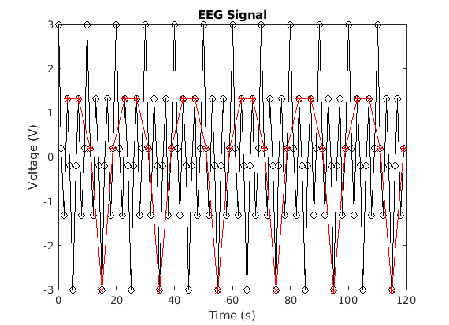
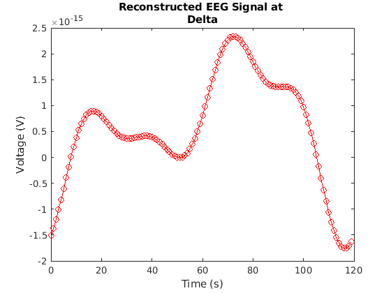
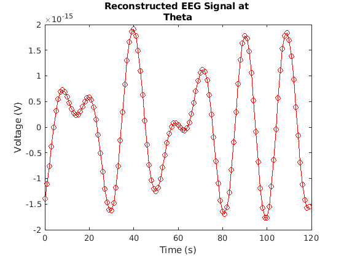
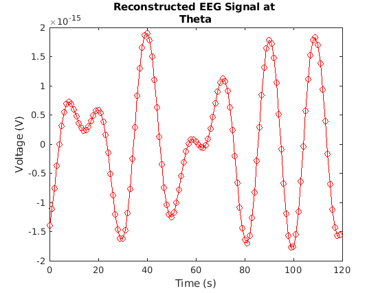
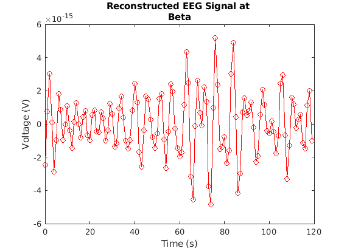
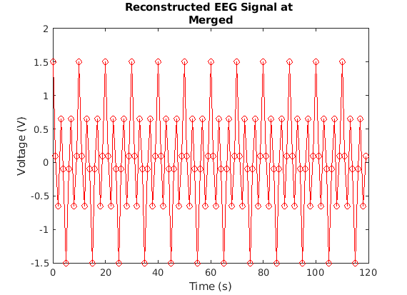
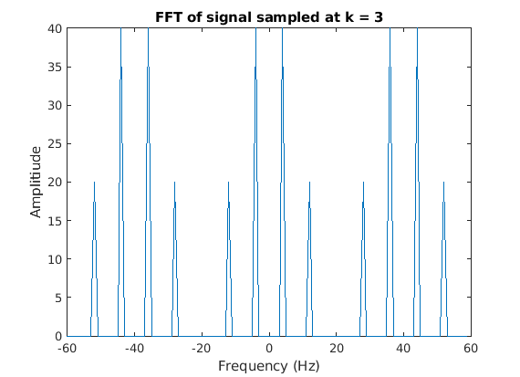
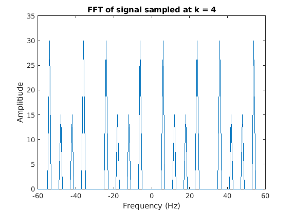
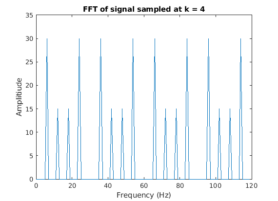

Contents
clear; clc; close all;
load('myMeasurements.mat')
figure();
plot(time, sig, 'ko-')
hold on;
time_subsampled = time(4:4:end);
sig_subsampled = sig(4:4:end);
plot(time_subsampled, sig_subsampled, 'r*-')
xlabel('Time (s)')
ylabel('Voltage (V)')
title('EEG Signal')

fs = 120;
N = length(sig);
f = (0:N-1) * fs/N;
fshift = (-N/2: (N/2)-1) * fs/N;
F_sig = fft(sig);
F_shift_sig = fftshift(F_sig);
figure();
plot(f, abs(F_sig))
xlabel('Frequency (Hz)')
ylabel('Amplitiude')
title('FFT of signal')
figure();
plot(fshift, abs(F_shift_sig))
xlabel('Frequency (Hz)')
ylabel('Amplitiude')
title('FFTshift of signal')


bandnames = ["Delta", "Theta", "Alpha", "Beta", "Merged"];
for bname = bandnames
signalPart = bandWiseReconstruct(time, F_sig, bname);
end
   
ds_facts = [2, 3, 4];
for fct = ds_facts
sig_downsamp_pos = zeros(1, length(sig));
sig_downsamp_pos(fct:fct:end) = 1;
sig_upsamp = sig .* sig_downsamp_pos;
F_sig_upsamp = fft(sig_upsamp);
figure();
plot(f, abs(F_sig_upsamp));
xlabel('Frequency (Hz)')
ylabel('Amplitiude')
title(['FFT of signal sampled at k = ', num2str(fct)])
end
  
Functions
function signalPart = bandWiseReconstruct(time, Fsig, bandname)
bnames = ["Delta", "Theta", "Alpha", "Beta", "Merged"];
freqs = [[0, 4, 8, 16, 0]; ...
[4, 7, 15, 31, 60]];
band_freqs = freqs(:, bnames == bandname);
bvec = zeros(1, length(Fsig));
bvec(band_freqs(1) + 1: band_freqs(2) + 1) = 1;
FsigPart = Fsig .* bvec;
signalPart = ifft(FsigPart);
figure()
plot(time, real(signalPart), 'ro-')
xlabel('Time (s)')
ylabel('Voltage (V)')
title(['Reconstructed EEG Signal at ', bandname])
end